How to import the sample data
This HOWTO assumes you will be using a webbrowser at a client terminal [ screenshots are from a Windows machine running Firefox ]
A
note of caution: Adminer and Webmin both have the capability of
making major and potential catastrophic changes to your SLIMS
appliance. ONLY experienced and trusted staff should be able to access
them to perform this, or other, operations. All normal SLIMS
functions should be carried out through the SLIMS Adminstrative login.
1. Acquire the sampledata.sql file. This is best done by using the Webmin interface to locate and download the file to the client machine.
A. Login to Webmin [
xxx.xxx.xxx.xxxx:12321 ] as root, and launch the File Manager
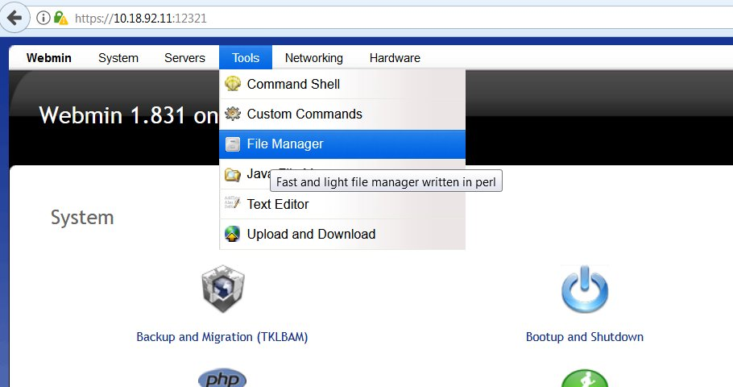
B. Navigate to
var/www/slims8/for_install on the server, and select
sampledata.sql, then save it to a a local location
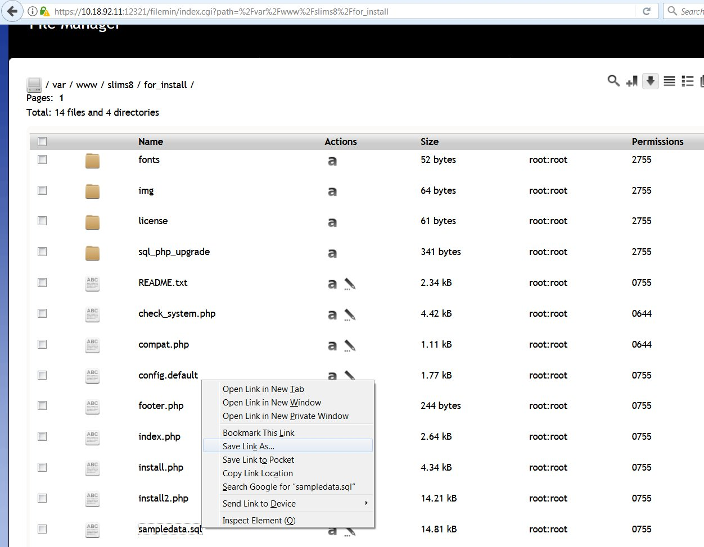
2.
Launch Adminer ( either directly via https://xxx.xxx.xxx.xxx:12322 , or
the link on the Control Panel http://xxx.xxx.xxx.xxx:8080 )
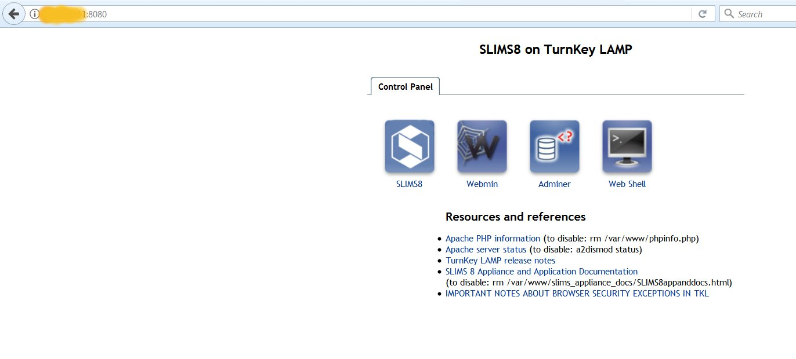
3. Login to Adminer using the MYSQL root password
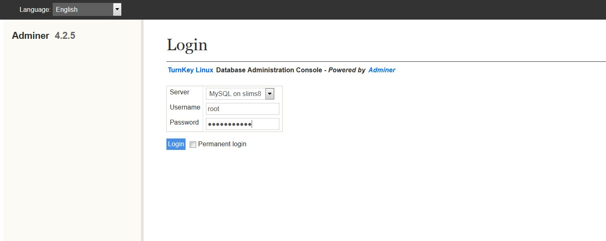
4. Select the senayandb database as the one you will work on,
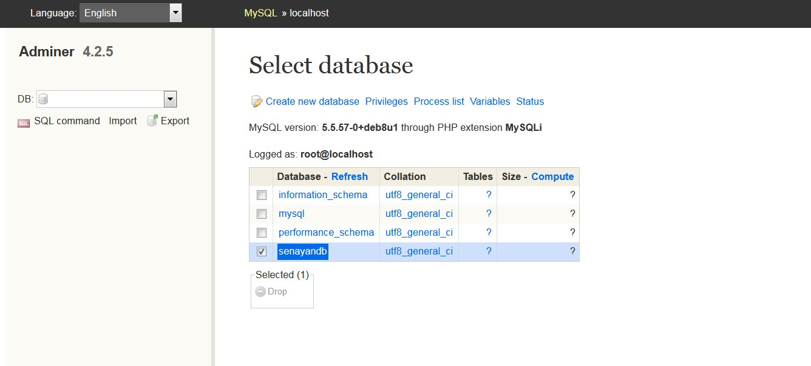
5. When the senayandb is open, select the IMPORT function
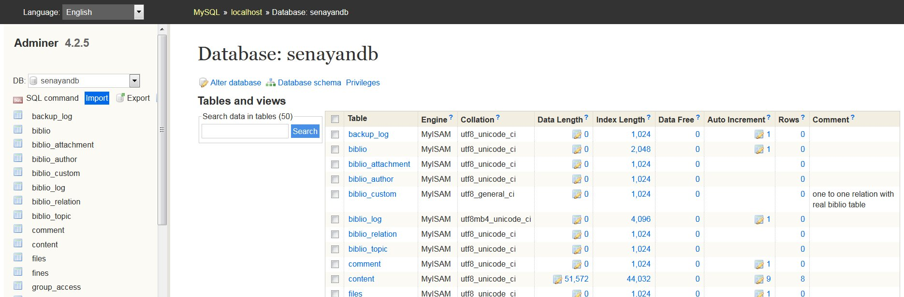
6. Select the file sampledata.sql from the location you saved it in, for upload.
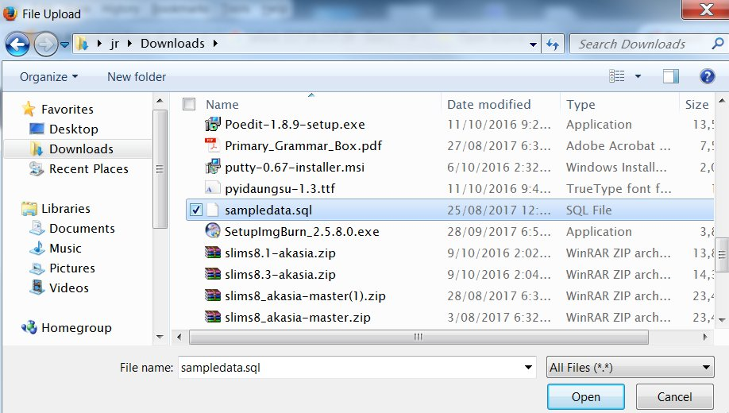
7. Execute the query
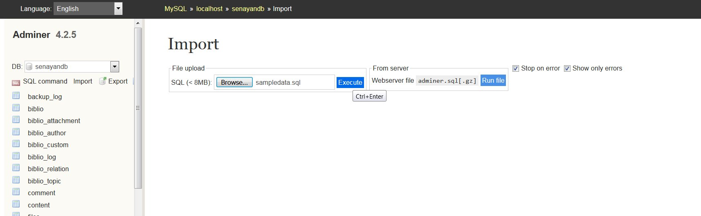
8. Observe the query result
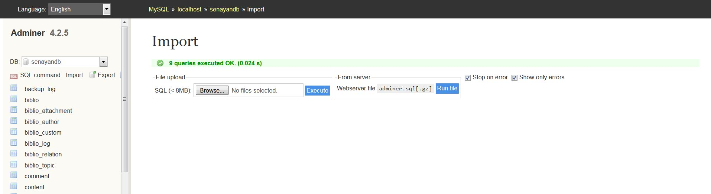
Now you must reindex the Bibliographic data before the data will be visible in the library system
9.
Log in to the SLIMS system using the Librarian Login, and go to the
Bibliography module. If you have not entered any data before doing the
sample data import, it will appear completely empty! In any case, the
sample data entries will not be visible.
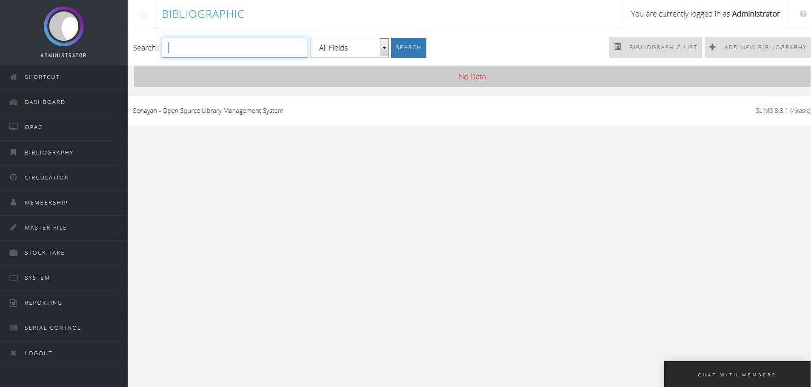
So, navigate to the SYSTEM module/Biblio Indexes section
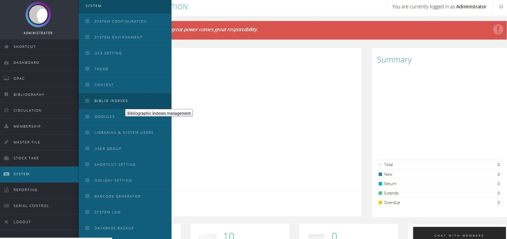
We see that there are now 15 records, but they are not indexed.
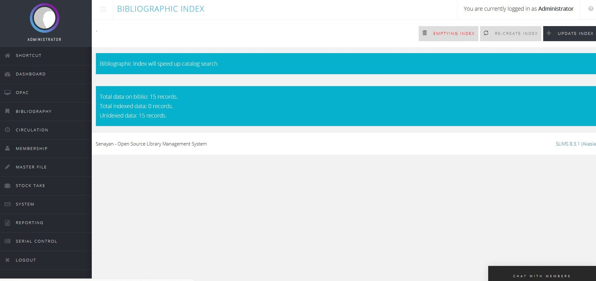
10. Reindex the Bibliographic data by UPDATE INDEX
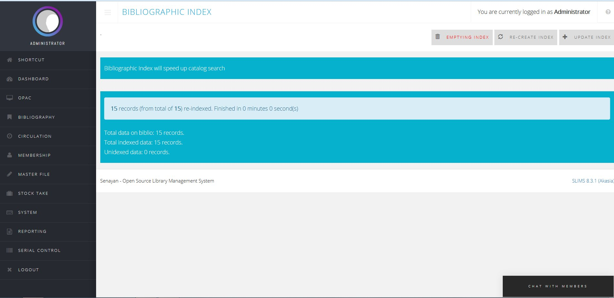
11. Check the result in the Bibliographic Module
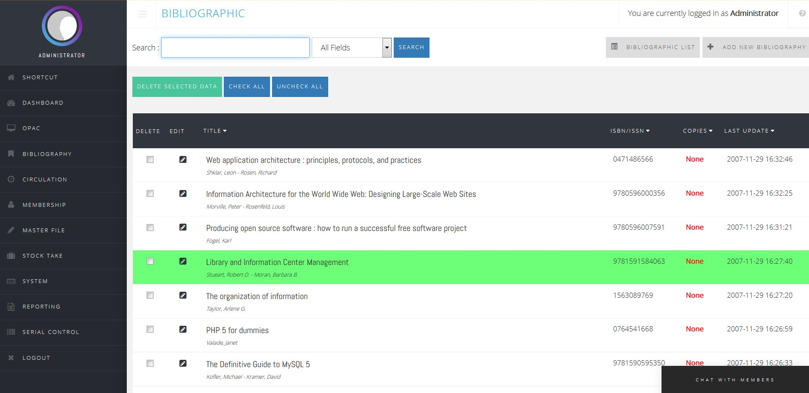